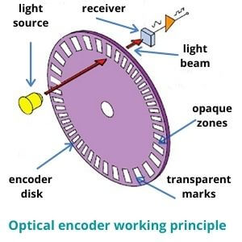
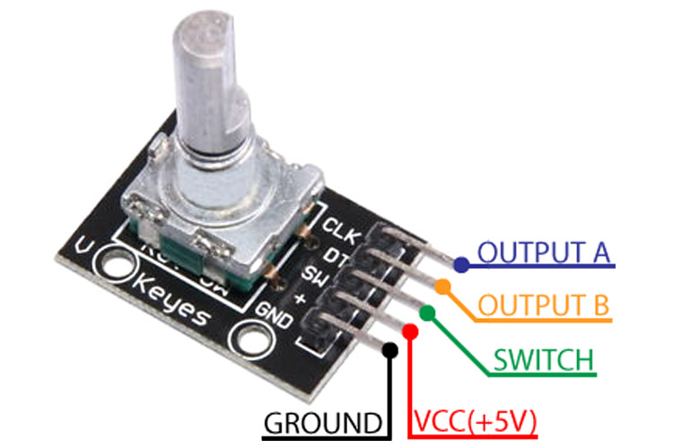
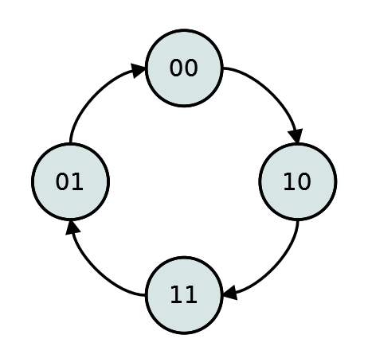
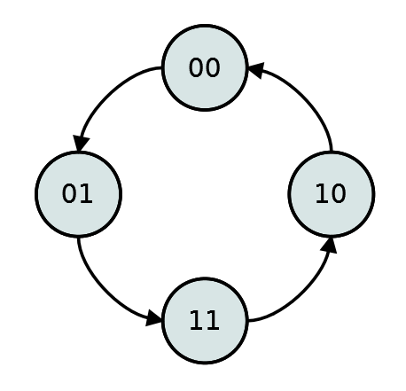
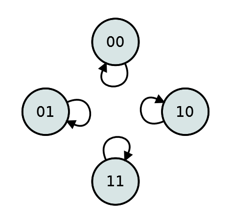
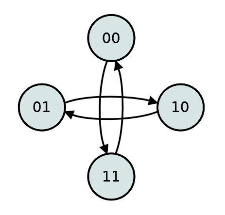
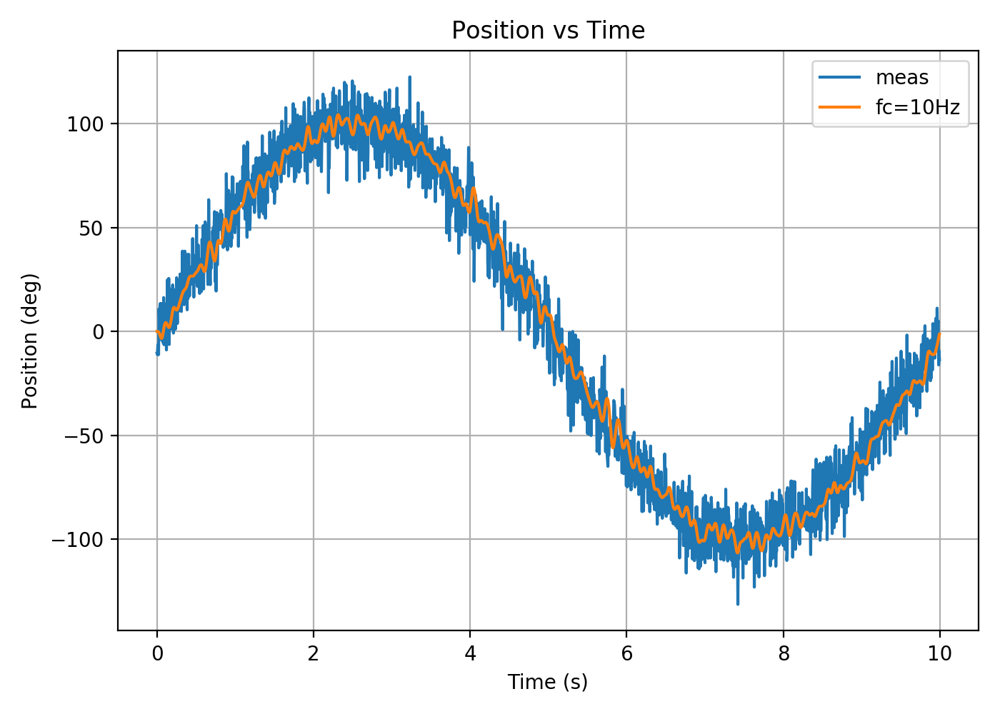

Decoding a quadrature incremental encoder to measure position of a knob. A custom implementation of the decoding logic is compared against a published Python package.
Incremental encoders are everywhere, used for high-precision motion control applications such as robotics or radar systems and also for simple interfaces like volume knobs. A rotary encoder repeats a signal sequentially “high” then “low” as it rotates. The signals are generated by various physical means, including magnetic, optical, and mechanical interfaces.
An optical encoder involves placing a light emitter and a received on either sides of an opaque disc, with open slots cut out at regular angle intervals. When the disc rotates, the receiver will register the light in a sequential on and off pattern as shown in Figure 1.
Figure 1: Optical Encoder
The rising and/or falling edges of the one/off square wave pattern are counted by a decoder, which can be implemented as a simple integrated circuit or part of microcontroller code. In this lab we will be using the Raspberry Pi GPIO and Python to count encoder signal edges.
A mechanical encoder uses physical conductive contacts that brush up one another to generate the on and off (high and low) signals as it rotates. This lab will utilize a mechanical encoder KY-040 shown in Figure 2 .
Figure 2: Mechanical Encoder KY-040
Compared to optical encoders, mechanical encoders are much cheaper but also more prone to noise associated with the mechanical interface. We will see the effect of mechanical noise on the ability to capture the knob position as it’s rotated.
Magnetometers or hall effect sensors and rotating magnetic fields are also used for rotational sensor encoding, especially in 3-phase DC motor commutation. Encoded magnetic strips are also used in linear sensing applications. This lab will be focused on a low-cost mechanical rotary encoder and the next part will use a hall effect rotary encoder on a DC motor.
Quadrature and Absolute Encoders
The disadvantage of using an incremental encoder is that the pulsing provided by the sensor in one direction is indistinguishable from motion in the opposite direction. Single channel incremental encoders are more useful for applications with one direction of motion.
For position feedback and determining the direction of rotation, a quadrature encoder solves the problem by adding a row of on/off signals in the physical interface with an offset such that the direction can be determined. Refer to Figure 3 which shows the operation of a quadrature encoder and the resulting two signals A and B that follow from a clockwise rotation. Figure 4 shows the resulting signal from rotation in clockwise and counter-clockwise directions.
Figure 3: Quadrature code change in clockwise direction
Figure 4: Quadrature A/B signal pulses
Gray-Code Decoding
When the A and B signals arrive from a quadrature encoder, we need to interpret the sequence of high and low signals from both lines to generate a change in value. This is the decoding process.
It is convenient to interpret the two signals in an incremental quadrature encoder as a 2-bit code. The first least significant bit (LSB: the right-most bit in most programming languages) signifies the B value as either ON (1) or OFF (0). The next bit contains the value of the A signal. We can therefore assign a change in value according to the sequence of bits that are received from the encoder.
The progression of the 2-bit code is as follows:
Direction
Sequence
CW
\(00\rightarrow01\rightarrow11\rightarrow10\)
CCW
\(00\rightarrow10\rightarrow11\rightarrow01\)
From these state transitions, given the current state of the A and B inputs, and the next state when either signal changes, we can compute the increment of pulse count in positive or negative direction. With only one bit changing at a time, this sequence is referred to as a 2-bit Gray Code.
However, this sequence is only valid if one bit changes. If two bits change at the same time, it is an invalid sequence where there is no way to tell if there was a clockwise or counter-clockwise turn to reach this state. The following Table describes the possible state transitions. For the invalid transitions, instead of aborting the process, we can make an assumption that the direction is the same as the previous transition but advances by 2 steps in the direction of travel instead of just one.
Transitions
Diagram
Forward Movement (+1)

Reverse Movement (-1)

No Movement (0)

Invalid Motion (\(\pm 2\))

The number of edges counted (state transitions) per each revolution of the rotary encoder provides the resolution of the encoder in Counts Per Revolution (CPR). A higher resolution may provide better precision of an angle measurement, but if the encoder is spinning too fast, the frequency of the pulses that need to be counted per second increases and may exceed the capabilities of the decoder (counter) and counts can be missed.
In the lab with the motion control application (part 2), we will investigate the relationship between the motor RPM and pulse frequency of the encoder. They are important factors in designing a feedback control system using rotary encoders. For this lab, we not as concerned with keeping an accurate absolute position count and missed steps are tolerable.
Materials
The two modules connected to the GPIO for this lab are a rotary encoder input and a simple readout display. The list of materials are provided in Table 1.
NOTE: Many Adafruit or Sparkfun branded modules have generic versions that may be more affordable and/or have faster shipping from alternative suppliers.
Wire up the components as shown in Figure 5. The encoder A and B wires are connected to GPIO 6 and 13, respectively. The encoder push-button switch is connected to GPIO 5 but is unused in this lab. The OLED display is an I2C device and is connected to SDA and SCL pins on the GPIO. Power is only 3.3V, be careful to never use the 5V power unless it’s for an external device not connected to the GPIO (such as a fan).
A printout in the terminal will show the current value of the encoder at a regular interval (10Hz refresh rate). Rotate the encoder knob and the updated count will be displayed. The package which was installed to count the encoder is hosted on GitHub here: https://github.com/mivallion/Encoder. The next task in this lab is to implement our own decoding logic and compare it against this package.
This will generate an image file of the plot called plot_output.png with simulated noisy sinusoidal and filtered data. The plot should look like:
Sample plot of filtered sinusoidal
The code samples in the scripts folder have been repurposed in a folder named encoder which contains multiple python files and classes. You are encouraged to read through the entire source code, but the focus of the lab will be to modify a portion of the encoder/quadrature.py file which handles the quadrature encoder counting.
Coding Task: Decode Quadrature Input
Run the encoder module. Make sure the current directory is the root of the workspace (project folder) and create a data subfolder then run the module
NOTE: The environment variable PYTHONPATH=. before running python ensure the module folder encoder is on the python’s search path.
When the command is run, the encoder and display are active for 15 seconds. While it’s running, rotate the knob and watch the output angle values. Figure 6 shows a sample of what the readout looks like. Do the readout degrees correspond to the rotation of the knob? At the end of the duration, the program writes out data and exits. The data folder should contain two plots and a data file:
Inspect the file encoder/configuration.py to see what the default configured values are for the encoder nad display. Some command line arguments override the configured default values. Inspect the file encoder/__main__.py to see what arguments can be passed when running python3 encoder.
Modify the source file encoder/quadrature.py to implement the quadrature decoding logic in between the comments
Follow the prompts in the terminal. You will be prompted to turn the encoder knob to +360 then reverse to -360 and back to 0 over 15 seconds a total of 4 times. Don’t start to turn the knob until the printout The following files are generated when the script is completed: